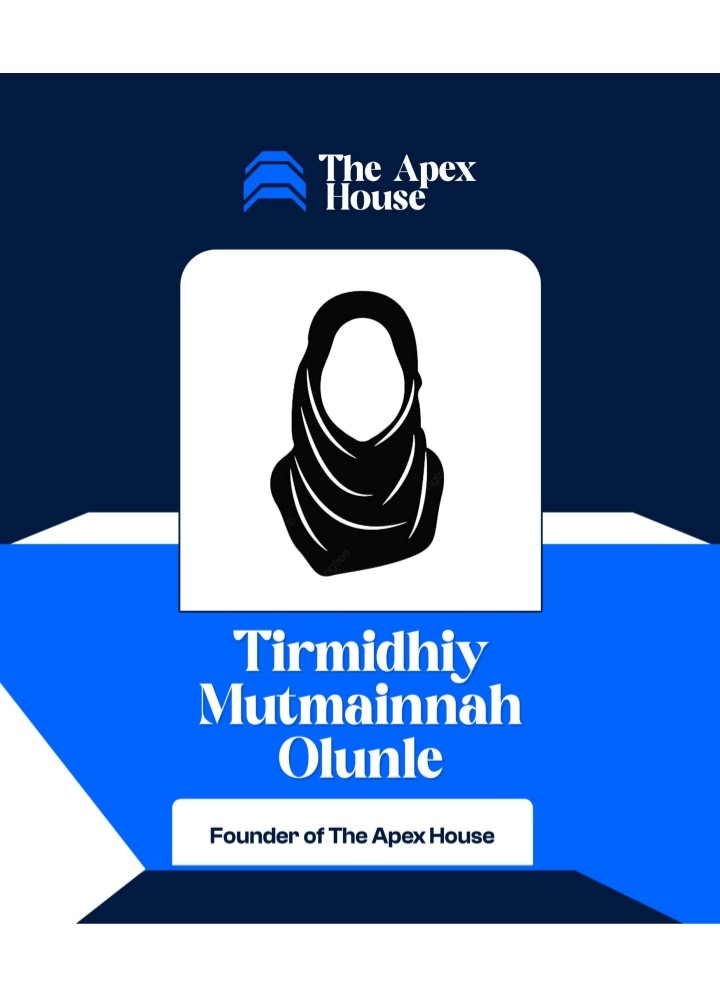

The Apex House
Mutmainnah Tirmidhiy Olunle
Founder, The Apex House
Mutmainnah Tirmidhiy Olunle, widely recognized as Khaādimatul-Qur'ān, is a Qur'an educator, public speaker, and passionate advocate for raising a generation deeply connected to the Book of Allah.
She is the Founder of Shifaaul Quluub Qur'an Academy, a faith-driven academy committed to nurturing hearts through the Qur'an. Beyond teaching recitation, the academy is dedicated to helping women build a lifelong relationship with the Qur'an through proper recitation, memorization, understanding, reflection, and living by its guidance.
She is a graduate of Osun State University, Osogbo.
Through her work, she has spoken at and moderated numerous Qur'an-centered gatherings, educational programs, conferences, and community events, approaching every platform with sincerity, excellence, and professionalism. She believes that true transformation begins when the Qur'an moves beyond our lips and settles within our hearts.
She remains committed to serving the Qur'an, empowering others through beneficial knowledge, and collaborating with individuals and organizations whose vision is rooted in faith, excellence, and meaningful impact.